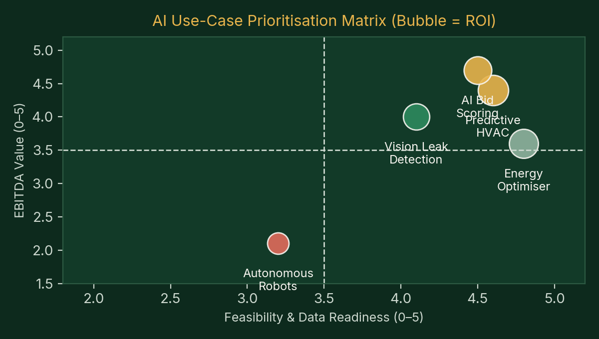

Chapter 5: Governance, Architecture & Boardroom Intelligence
As artificial intelligence moves from isolated plant-room experiments into mission-critical facilities infrastructure, governance, cybersecurity, and architectural ownership must take center stage. An un-governed AI system that shuts down a hospital HVAC unit or misallocates municipal water resources is a catastrophic corporate liability.
This chapter outlines the enterprise architectural principles and governance guardrails designed by AZ Consultants to ensure scalable, compliant, and auditable AI adoption.
5.1 Boardroom Intelligence: 6 Lenses from Plant Room to P&L
In high-performing FM organizations, reporting has fundamentally evolved:
$$\text{What Happened (Descriptive)} \longrightarrow \text{Why It Happened (Diagnostic)} \longrightarrow \text{What Will Happen (Predictive)} \longrightarrow \text{What Should We Do? (Prescriptive)}$$
The modern C-suite boardroom views enterprise facility operations across six integrated strategic lenses:
| Strategic Boardroom Lens | Primary Operational Focus | Executive P&L Metric |
|---|---|---|
| 1. Growth & Win Probability | Pre-contract RFP pipeline scoring, tender margin qualification | Qualified pipeline win rate, commercial gross margin |
| 2. Operational Cost-to-Serve | Cross-departmental workflow friction, technician wrench-time | Direct labor cost per m², administrative overhead index |
| 3. Asset Health & Capital Lifecycle | Critical MEP asset depreciation, vibration health, RUL modeling | Capex deferral index, extended asset lifespan (+3–5 yrs) |
| 4. Operational Risk & Resilience | Single-point asset failure exposure, cybersecurity posture, HSEQ | Zero unplanned outage hours, zero lost-time injuries (LTI) |
| 5. ESG & Carbon Decarbonization | Dynamic energy management, water recycling, refrigerant leak index | kWh/m² intensity, Scope 1 & 2 carbon abatement |
| 6. Cash Flow & Working Capital | Automated invoice settlement velocity, SLA deduction defense | Days Sales Outstanding (DSO), working capital cycle time |
5.2 Ecosystem AI: Linking Owners, Tenants, OEMs & Regulators
Facilities management does not operate in a vacuum. Maximum enterprise value is unlocked when data flows seamlessly across the broader property ecosystem:
- Asset Owners & Investors: Access live executive dashboards demonstrating portfolio asset valuation preservation, ESG compliance scores, and audited operational expenditure.
- Tenants & Occupants: Interact with intuitive workplace experience applications offering instant climate adjustment requests, indoor air quality transparency, and automated desk booking.
- Suppliers & Original Equipment Manufacturers (OEMs): Receive automated machine telemetry forecasts, streamlining warranty validation, predictive spare parts delivery, and factory overhaul scheduling.
- Regulators & Municipal Authorities: Access tamper-proof digital compliance logs for statutory fire/life safety systems, water hygiene (Legionella), and civil defense certifications.
5.3 The Use-Case Prioritization Matrix: Eliminating Vanity AI
One of the primary reasons FM AI initiatives fail is that organizations waste time and capital on low-impact, high-complexity "vanity projects" (such as autonomous cleaning robots in low-traffic lobbies or complex 3D digital twins with no underlying operational integrations).

AZ Consultants enforces a rigorous 0-to-5 scoring framework across five commercial dimensions before a single line of code is deployed:
- EBITDA Impact: Does this initiative directly expand margin or protect revenue?
- Data Readiness: Is clean CAFM/BMS telemetry readily accessible via open protocols?
- Implementation Velocity: Can an MVP be field-deployed and verified within 90 days?
- Operational Risk: What is the worst-case failure mode if the model outputs an anomaly?
- Frontline Adoption Feasibility: Will technicians and supervisors embrace or resist the workflow?
[!IMPORTANT] The Non-Negotiable Portfolio Rule:
Kill any AI pilot that lacks a named P&L business sponsor and a clear 90-day quantified KPI. Fund the top-right Quick-Win Quadrant (Predictive Chillers, AI Bid Scoring, Vision Leak Detection) to generate self-funding capital for subsequent operational waves.
5.4 Disciplined Adoption & The 6-Month Payback Curve
Real digital transformation is 20% technology and 80% change management. When implemented correctly, AI investments follow an aggressive, self-funding J-curve:

- Months 1–3 (90-Day MVP): Test in a single live facility with baseline KPIs and frontline technician involvement. Total net investment remains minimal.
- Months 4–6 (Workflow Deepening): Embed directly into existing CAFM and BMS interfaces—never create a separate third-party login. Cumulative cash flow crosses breakeven (Full Payback in < 6 Months).
- Months 7–12 (Portfolio Scaling): Reinvest proven net savings ($530K+ annual run-rate per asset cluster) to scale across the broader national portfolio.
5.5 Scaling Governance: The 4 Autonomy Levels
As autonomous systems scale, governance must scale with equal discipline. Control intensity must match the inherent operational risk of each action:

graph TD
L1["Level 1: Assist<br/>AI extracts insights; human initiates action"] --> L2["Level 2: Recommend<br/>AI drafts work orders; human taps to approve"]
L2 --> L3["Level 3: Coordinate<br/>AI orchestrates routine dispatches within strict bounds"]
L3 --> L4["Level 4: Autonomous Act<br/>AI modulates setpoints; hardcoded fail-closed trip gates"]
The 9 Core Guardrails of Governed AI:
- Named Human Accountability: Every AI pipeline must have a named operational owner (P&L sponsor) and a designated technical guardian.
- Zero Vendor Lock-in: Build on open, modular, model-agnostic data architectures using standard REST/MQTT/BACnet protocols.
- 100% Client Data Ownership: Telemetry and operational models remain the sole intellectual property of the asset owner.
- Air-Gapped Safety Interlocks: High-risk plant machinery must maintain mechanical and electrical physical interlocks that prevent software overrides.
- Continuous Prompt & Model Drift Monitoring: Machine learning accuracy must be continuously audited against baseline ground truth.
- Least-Privilege Security Scoping: Edge inference containers possess zero read/write access to corporate financial keyrings.
- Complete Audit Traceability: Every autonomous recommendation and human approval is immutably logged for regulatory review.
- Fail-Closed Fallback Architecture: If network connectivity or model inference drops, systems instantly revert to deterministic BMS schedules.
- Zero-Token Local Execution: Enforce local rule verification before dispatching external LLM API tokens.
Key Takeaways for FM Leadership
- Govern by Design: Never allow autonomous execution to outpace your operational control mechanisms.
- Demand Open Standards: Never buy a proprietary "black-box" AI system that locks your facility data into a closed vendor ecosystem.
- Empower Your Frontline: Tie supervisor and technician incentives directly to digital adoption and avoided asset downtime.
👉 Next Step: Chapter 6: AZ Consultants KSA Funnel & How to Hire Us